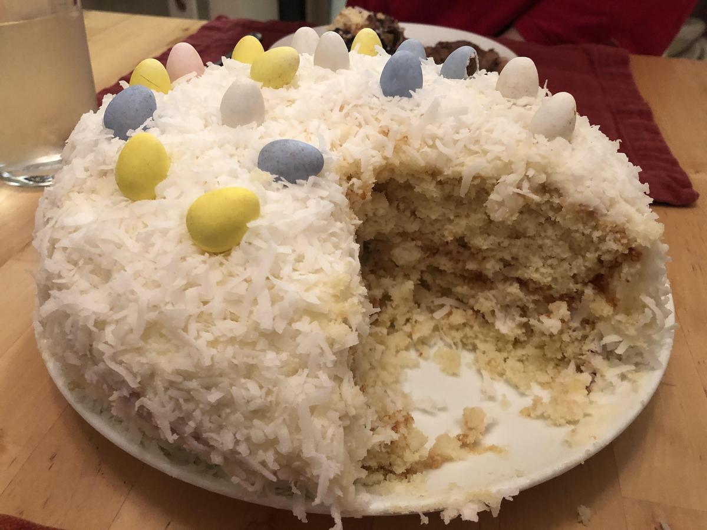

Based on https://www.myrecipes.com/recipe/coconut-sheet-cake
Personal rating: 3 / 5

3 large eggs
8 oz sour cream (1 container)
1/3 cup water
8.5-ounce cream of coconut (1 can)
1/2 tsp vanilla extract
18.25 oz white cake mix (1 package)
8 oz cream cheese, softened (1 container)
1/2 cup butter, softened
3 tablespoons milk
1 teaspoon vanilla extract
16 oz powdered sugar, sifted (1 package)
7 oz sweetened flaked coconut (1 package)
While cake is in the freezer, make the cream cheese frosting
Beat cream cheese and butter at medium speed with an electric mixer until creamy; add milk and vanilla, beating well
Gradually add sugar, beating until smooth. Stir in coconut
Remove the cake from the freezer, and spread the Coconut-Cream Cheese Frosting on top of chilled cake. Cover and store in refrigerator